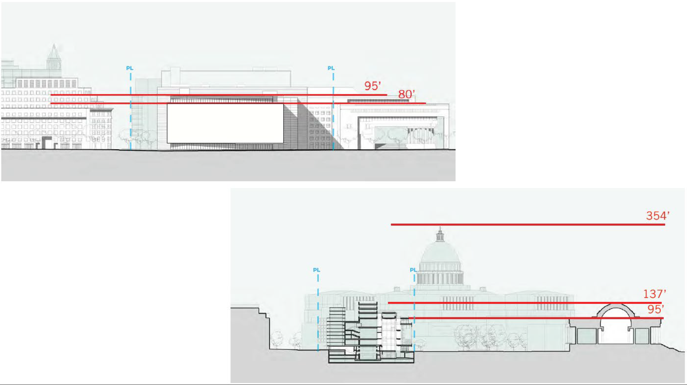

JOHNS HOPKINS UNIVERSITY BLOOMBERG CENTER
Toolkit: LiDAR, Sketchup, Enscape, Revit, Illustrator, Photoshop, pencil and paper.
Role: Architect and BIM Manager.

Creating a transformative space in the heart of Washington DC to reflect the university's focus on global challenges and create a flexible and innovative academic building.
The problem
The building is a revitalization of the former Newseum building acquired by Johns Hopkins University. Originally designed to accommodate the museum’s highly specialized and linear exhibit experience, the interior spaces are not conducive to an academic setting.
From an exterior perspective, the existing building has a strong relationship with the historical context of the National Mall but does not reflect the university’s institutional identity.
Research Objectives
The following objectives were established prior to the start of the research process:
- Analyzing the site constraints and historical context.
- Identifying the user’s goals and priorities behind the building program.
- Understanding the challenges and opportunities of the existing structure.
Research
The first step is to analyze site attributes and historical context. Located along Pennsylvania Avenue, between the White House and the United States Capitol, the site is highly visible.
The eastern side of the block contains the Canadian Embassy, which was constructed in 1989. To the north of the site, across from C Steet, the Moultrie Courthouse houses the superior court of the District of Columbia and was built in 1976 in a mid-century modernist style.
Accross from Pennsylvania Avenue, the National Gallery of Art West and East wings reflect a harmonious blend of neoclassical and modernist architecture, and the Federal Trade Commission Building is designed following the Classical Revival style.

Withing the site boundaries, the north edge also includes a mixed use development that contains residential and retail spaces built in 2006. Those spaces will remain unaltered as part of the real estate transaction and renovation.

Setbacks, city and national park jurisdictions along the streetscape, and existing conditions limit the amount of modifications allowed to the exiting building footprint. In addition, the existing building height must remain within the same range as the existing structure.
Competitive Analysis
The initial space program provided by the client was showing a large proportion of the total square footage allocated towards private offices. In order to understand the goals and expectations for the space allocation, user group meetings were organized to discuss the correlations between office square footage and collaboration spaces in similar higher education buildings.
The benchmarking analysis below highlights the direct effect of private offices on the amount of flexible collaboration spaces. This analysis was key to help the client understand their priorities given the restricted building gross area available.

Additional benchmarking analysis were provided. Below is an example comparing the type and size of student collaboration space designed in recent years in similar university buildings (names and locations are left out for privacy purposes).

Key Findings
During the pre-design and schematic design process, a series of workshops with the users were conducted to understand the vision for this project. The following key findings were identified:
- The building needs to establish a greater Johns Hopkins University identity in the District of Columbia.
- The renovation should increase the amount of natural daylight throughout.
- The space planning needs to provide long term flexibility to support changing pedagogies, support a platform to introduce innovative pedagogy, and create collaborative learning and working environment.
- The design solution needs to activate Pennsylvania Avenue and the surrounding neighborhood.
Identity
Daylight
Innovation
Activate
Lo-Fi Building Planning
With the building being originally designed for museum galleries, the existing floor to floor height did not align with the characteristics of a state-of-the-art educational space. For this reason, a number of floor slabs were identified to be demolished in order to make space for new accessible floor plates. Slab openings were also added along the north façade to bring daylight into the the spaces identified as workspaces. Slab infills were designed to reach target program and gross area.

The programming data gathered then gets translated to 2D floor plans. This step involves collecting information about adjacencies, spatial relationships, circulation patterns and organizational strategies floor by floor. Spaces are designed to be flexible and adaptable to accommodate future changes in program or pedagogy. High-level conversations with our team of structural, mechanical, electrical, plumbing and life safety are started in order to confirm feasibility.

Materials exploration
Concurrently to the programming exercises, materiality is being explored. The National Gallery of Art west and east buildings along with the existing Newseum building use a Tennessee marble with a low pink tone. Using the Tennessee marble for the renovation was an important factor to the contextual identity of the structure. The use of glass with a copper interlayer, along with bronze metal panels strengthen the aesthetic quality and warm tones of the neighborhood.

Lo-Fi Building Massing and Design
Concurrently to creating the initial building planning, the overall building massing is being explored. The program and context of the building inform decisions about views, natural light, opacity, transparency and environmental impact.
The existing building form is made up of three rectangular “bars” that are aligned with the Pennsylvania Avenue street wall, which vary in length, height, and in their amount of transparency and relationship to the exterior. Each bar is separated by 12-foot wide circulation zones tied together by a series of interconnected bridges and open stairs that currently move visitors between museum exhibits and floor levels. This basic arrangement of “bars” are remaining in the new design.
Most of the changes on the building envelop are focused on the main façade facing Pennsylvania Avenue. The 50-ton and 100-foot-wide Frist Amendment tablet displayed on the monumental façade is being removed. The current configuration is being modified with the recessed window getting filled in to add program area and bring building activity out to the street. The east and west edges are left transparent to reinforce the axial relationship with the US Capital and the White House.
Hi-fi Building Planning
The renovation simplifies and reorganizes the Newseum’s building plan to support JHU’s academic efforts and to contribute to high student engagement. Workspaces are arranged to include diversity in settings and include a mix of quiet and focus workspaces, while creating hubs to gather with diverse types of collaboration spaces. Academic spaces provide long term flexibility to support expanding programs and offer a platform to introduce innovative pedagogy. A conference center on the upper levels of the building offers convening spaces for topic experts, policymakers, academic and policy leaders.

Hi-fi Building Massing and Design
The JHU Bloomberg Center reinterprets the original Newseum’s façade with a renewed material palette that reinforces Johns Hopkins’ institutional identity and reflects the surrounding historic context. Shifting the main entry eastward enhances the existing mid-block plaza, improves the entry sequence and provides a more direct access to the vertical circulation. Maintaining much of the careful planning and alignments already established, subtle shifts in the façade components bring more natural light into the building to promote health and wellness within the interior.

Final Photography